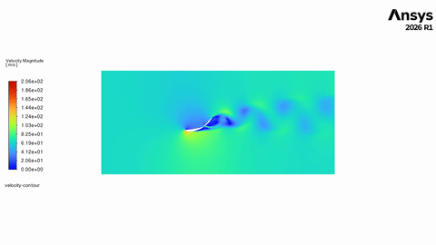
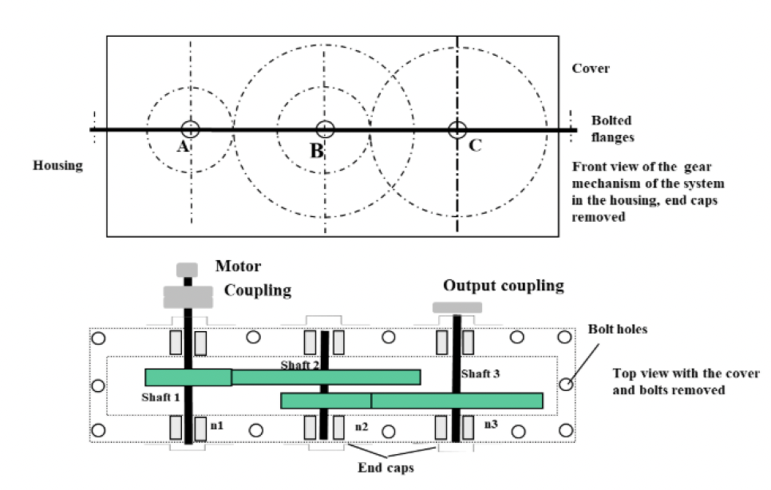

Engineering Work
Featured Projects
A few of thirteen. Click any project for full details, images, and analysis.

01
F1 Active Rear Wing CFD Analysis
Transient sliding-mesh CFD comparing a conventional DRS flap against Ferrari's 230° "Macarena" mechanism — revealing an aerodynamic airbrake spike invisible to steady-state analysis alone.

02
Mars Rover EDL Fuel Optimization
Constrained nonlinear optimization of entry, descent, and landing fuel consumption across normal and modified atmospheric conditions using COBYLA and SLSQP in Python.

04 — NUStars · NASA Student Launch
NUStars Fiberglass Composite Airframe
In-house manufactured fiberglass airframe and Von Karman nose cone through six vacuum-bagged layup iterations, validated with ANSYS FEA and CFD.

08
Two-Stage Gearbox Design
Full AGMA-based design of a 70 kW two-stage spur gearbox — three shafts, four gears, six bearings — each sized with a calculated, traceable margin against failure.